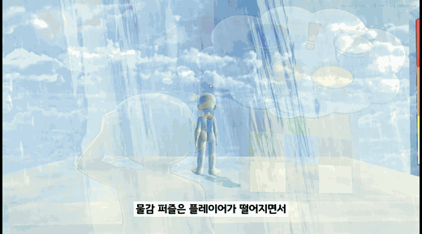

에피소드 3 전체
- 로비와 3개 세부 스테이지 진행
- 퍼즐 완료 조건과 출구 개방 연결
- 컷씬·NPC·리듬 퍼즐 연출 구현
3D PUZZLE ADVENTURE · TEAM MOEMI
AI NPC와 대화하고 퍼즐을 해결하며 흩어진 기억을 복원하는 에피소드형 3D 퍼즐 어드벤처입니다.

기능 하나를 따로 만드는 데 그치지 않고, 에피소드 3의 시나리오·퍼즐·대화·사운드·저장 결과가 하나의 플레이 순서로 이어지도록 연결했습니다.
아래 탭을 누르면 에피소드 흐름, 사운드 구조, 결과 데이터가 서로 어떻게 맞물리는지와 대표 코드를 함께 확인할 수 있습니다.
EPISODE 3 FLOW
각 스테이지를 독립 미니게임으로 두지 않고, 플레이어의 선택·힌트 사용·수집 태그를 결과 데이터로 모아 최종 기억 복원과 엔딩 판정에 사용했습니다.
CENTRAL AUDIO
씬 오브젝트는 “무슨 소리가 필요한지”만 요청하고, 음원·볼륨·믹서·씬 전환은 SoundManager와 SoundProfile이 담당하도록 정리했습니다.
public enum BGMType { Title, Episode0, Episode1_1, Episode3_2, Episode4_Finale }
public enum AmbientType { Ep0_Loop, Ep1_1_Loop, Ep3_2_Loop, Ep4_Loop }
public enum UIType { Click, Hover, Confirm, Cancel, Open, Close }
public enum SFXType { Jump, Land, PortalPass, Ep3_2_TileStepCorrect }PROGRESSION DATA
각 스테이지의 결과를 공통 데이터로 모으고, 힌트 사용량과 AI 상호작용, 필수 기억 태그를 합산해 엔딩을 판정했습니다.
data.totalPuzzleScore =
stage3_1Result.puzzleScore +
stage3_2Result.puzzleScore +
stage3_3Result.puzzleScore;
data.totalHintCount =
stage3_1Result.hintCount + ...;STATE SYNCHRONIZATION
이미지 컷씬과 텍스트 컷씬의 수명이 달라 입력 잠금이 먼저 풀리던 문제를 별도 조건으로 분리했습니다. UI와 커서가 장면 중간에 노출되지 않도록 실제 연출 종료 시점을 기준으로 상태를 해제합니다.
“오류를 없앴다”가 아니라 플레이 흐름이 왜 끊겼는지 찾아 책임과 종료 조건을 다시 나눈 사례입니다.
이미지 연출 종료가 전체 컷씬 종료로 처리되어 텍스트가 남아 있는데도 UI와 커서가 활성화됐습니다.
두 연출의 종료 조건을 분리하고, 마지막 연출이 끝난 뒤에만 CutsceneMode를 해제했습니다.
씬마다 재생 책임이 흩어져 같은 BGM이 중복되거나 옵션 값이 기본값으로 되돌아갔습니다.
중앙 매니저와 씬 프로필로 재생 경로를 통합하고, 사용자 설정 저장·리셋 기준을 분리했습니다.
팀 전체 기능과 개인 구현을 구분했습니다. 아래는 Git 커밋과 프로젝트 문서로 확인한 직접 작업 범위입니다.